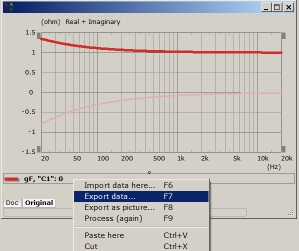

VACS - Curves and Export Data
 |
|
VACS - Curves and Export Data |
Assuming you want to assign a frequency dependent impedance spectrum to section WallImpedance. The curve may be imported into VACS or generated with its formula-system (Vacs/Graph/Create Curve or Contour).
In order to help swift processing in ABEC the number of curve points should be moderate, say for example 200 points on a log-axis. Otherwise consider to use resampling features of VACS. Often only a few points are sufficient. ABEC will perform the interpolation if necessary.
Finally, in VACS, select the curve and issue Vacs/IO/Export Data...
For File Format select
Then click Save and provide a filename in the subsequent File Dialog.
In ABEC issue Add Data File and provide an alias. This alias can then be used in the scripts where you want to access the data of this file. The parameter is DataFileAlias=. For example:
WallImpedance "Damping Wall"
DataFileAlias=Z1
RefElements="wall"
ImpType=Impedance
Normalized
In textual format such a data-file could look like the following tables. The red colored lines are the above mentioned VACS-Import Control Settings which provide just enough information to the ABECs import-driver to perform proper interpretation. For WallImpedance the exact meaning of the data are controlled with parameters ImpType= and Normalized=.
The following two data-file-examples are identical in value. The first lists a spectrum of normalized impedance as real- and imaginary parts, whereas the second has it as amplitude and phase values, the latter in degree. If Data_Format= were absent it would be hard to distinguish the proper complex notation.
Assuming the data-file is always a spectrum, then, for WallImpedance and in many other cases, the import-engine of ABEC needs only to be provided with a single Vacs-Import Control Settings together with your data, which is
Data_Format=
Data_Format=Complex
Data_Domain=Frequency
20 1.35083 -0.796214
39.9052 1.21632 -0.526054
79.6214 1.13338 -0.34756
158.866 1.08224 -0.229631
316.979 1.05071 -0.151716
632.456 1.03127 -0.100237
1261.91 1.01928 -0.0662262
2517.85 1.01189 -0.0437552
5023.77 1.00733 -0.0289088
10023.7 1.00452 -0.0190999
20000 1.00279 -0.0126191
Data_Format=Ampl_Phase
Data_Domain=Frequency
20 1.56802 -30.5162
39.9052 1.32521 -23.3883
79.6214 1.18548 -17.0486
158.866 1.10634 -11.9794
316.979 1.06161 -8.21634
632.456 1.03613 -5.55161
1261.91 1.02143 -3.71749
2517.85 1.01283 -2.476
5023.77 1.00774 -1.64385
10023.7 1.0047 -1.08929
20000 1.00287 -0.720977